У цьому проекті ви навчитесь програмувати власні анімації!
Крок 1: Анімація космічного корабля
Давайте створимо космічний корабель, який прямуватиме до Землі!
Завдання для виконання
Створіть новий проект у Скретч та видаліть спрайт кота, так щоб проект став пустим. Онлайн Скретч-редактор за посиланням jumpto.cc/scratch-new
Додайте до вашої сцени спрайти "Космічний корабель" і "Земля". Також слід встановити тло «Зірки». Ось, як сцена виглядатиме:
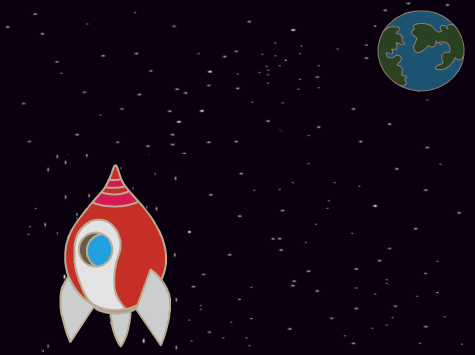
screenshot
Натисніть на новий спрайт космічного корабля, і натисніть на вкладку "Образи".
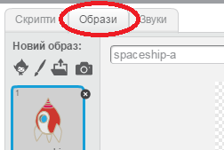
screenshot
Виберіть зображення за допомогою інструмента-стрілки. Потім натисніть на круговий маркер повороту і повертайте зображення, поки воно не опиниться на правильному боці.
screenshot
Додайте цей код до вашого космічного корабля:
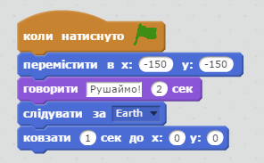
screenshot
Змініть числа у блоках коду, так щоб код був точно такий же, як на верхньому зображенні.
Якщо ви запустите код, то побачите як космічний корабель говорить, вмикається і рухається до центру сцени.
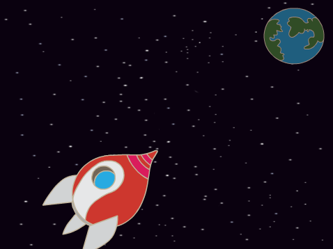
screenshot
Центр сцени має координати x:(0) y:(0). Позиція x:(-150) y:(-150) відноситься до нижньої частини сцени з лівої сторони, а позиція x:(150) y:(150) — до верхньої правої.
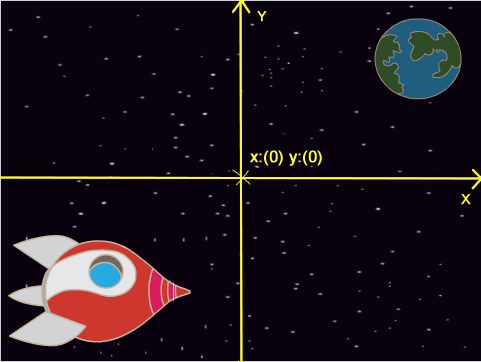
screenshot
Якщо вам потрібно дізнатись координати якоїсь позиції на сцені, перемістіть вказівник миші на місце, яке вас цікавить і запишіть координати, які з'являться під сценою.
screenshot
Перевірте вашу анімацію, натиснувши на зелений прапорець якраз над сценою.
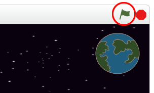
screenshot
Виклик: Вдосконалюємо анімацію
Чи можете ви змінити цифри в скрипті анімації, так щоб: + корабель рухався поки не доторкнеться Землі? + корабель повільніше рухався до Землі?
Потрібно буде змінити цифри у цьому блоці:
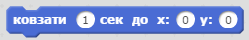
screenshot
Збережіть свій проект
Крок 2: Анімація з використанням циклів
Ще один спосіб анімації корабля — вказати йому рухатися потрошку, але багато разів поспіль.
Завдання для виконання
Видаліть з вашого коду блок ковзати, натиснувши на блоці правою кнопкою, а потім на "вилучити". Код можна також видалити, перетягнувши його з області скриптів назад до області блоків коду.
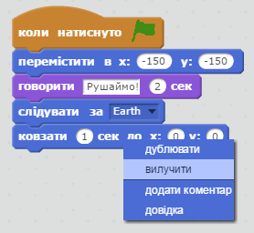
screenshot
Після того як ви видалили код, замініть його на ось цей:
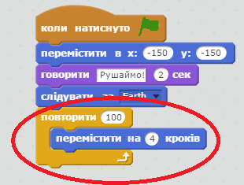
screenshot
Блок повторити використовується, щоб повторювати щось багато разів; таке повторення називається цикл
Якщо ви клацнете на прапорець, щоб спробувати цей новий код, ви побачите, що він робить майже те ж саме, що й раніше.
Але ми можемо додати в цикл ще більше цікавих блоків. Додайте блок змінити ефект колір на 25 (у розділі "Вигляд"), щоб раз за разом змінювати колір космічного корабля, поки він летітиме:
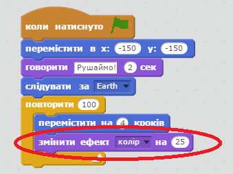
screenshot
Натисніть на прапорець, щоб побачити нову анімацію.
screenshot
Також можна потроху зменшувати космічний корабель, поки він летить до Землі.
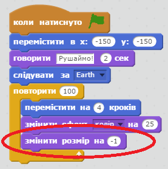
screenshot
Перевірте вашу анімацію. Що станеться, якщо ви клацнете на прапорець вдруге? Чи злітає космічний корабель з потрібним розміром? Ви можете використати цей блок, щоб виправити вашу анімацію:
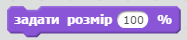
screenshot
Збережіть свій проект
Крок 3: Мавпа в невагомості
Давайте додамо до анімації мавпу, яка загубилась у космосі!
Завдання для виконання
Спочатку додайте спрайт мавпи з бібліотеки.
screenshot
Якщо ви натиснете на новий спрайт мавпи, а потім на вкладку "Образи", то ви зможете відредагувати вигляд мавпи. Виберіть інструмент "Еліпс" і намалюйте білий космічний шолом навколо її голови.
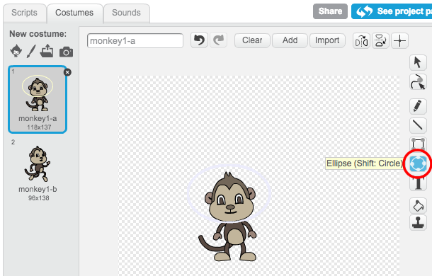
screenshot
Тепер натисніть "Скрипти" і додайте цей код до мавпи, завдяки якому вона буде повільно обертатися по колу:
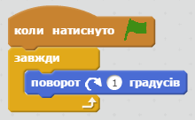
screenshot
Блок завжди — це ще один цикл, але цей ніколи не зупиняється.
Натисніть на прапорець для перевірки вашої мавпи. Щоб зупинити анімацію, потрібно натиснути на кнопку зупинки (червоний кружечок біля прапорця).
screenshot
Крок 4: Блукаючі астероїди
Давайте додамо до вашої анімації блукаючий астероїд.
Завдання для виконання
Додайте спрайт "астероїд" до вашої анімації.
screenshot
Додайте цей код до вашого астероїду, щоб він відбивався від країв сцени:
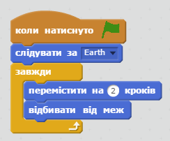
screenshot
Клацніть на прапорець для перевірки вашого астероїда. Чи він відбивається від меж сцени?
Крок 5: Сяючі зірки
Давайте об'єднаємо декілька циклів, щоб створити сяючу зірку.
Завдання для виконання
Додайте спрайт "зірка" до вашої анімації.
screenshot
Додайте цей код до зірки:
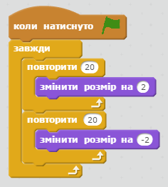
screenshot
Натисніть на прапорець, щоб перевірити цю анімацію. Що робить цей код? Спочатку зірка збільшується у 20 разів, а потім зменшується в 20 разів, повертаючись до початкового розміру. Ці 2 цикли знаходяться всередині циклу завжди, так що анімація постійно повторюється.
Виклик: Створюємо свою власну анімацію
Щоб почати новий проект, зупиніть космічну анімацію і натисніть на "Файл", потім натисніть на "Новий".
Використайте нові знання з цього проекту, щоб створити власну анімацію. Це може бути все, що вам заманеться, але анімація має відповідати параметрам. Ось кілька прикладів: